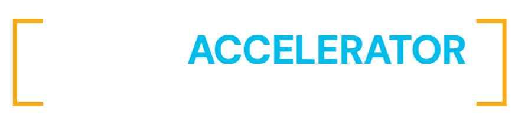

The Daily Drop
Come curious. Leave with something you can use on Monday.
AOA is Cisco's employee-led community where Ops teams share AI tools, use cases, and best practices to work smarter and deliver measurable impact.